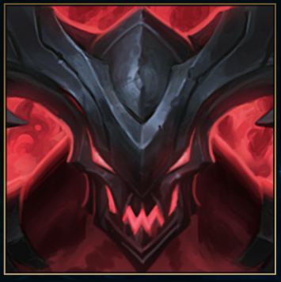

Kayn es un campeon el cual es muy situacional, por eso esta en este puesto del ranking.Kayn tiene 2 transformaciones, que lo ayudan
para ver las mejores opciones de victoria sobre el equipo rival, La transformacion de Asesino Sombrio, se caracteriza por ser muy fuerte
capaz de lograr "One Shot" y tener una movilidad muy rapida, que lo convierten en un asesino letal,capaz de entrar con sigilo desde la jungla.
Rhast el Darkin

Rhast es un alma darkin que esta oculta en la guadaña de Kayn,este darkin busca poseer el cuerpo de Kayn, pero la determinacion del discipulo de Zed es tan fuerte
para no dejarse vencer facilmente.Pero, cuando rhast logra dominar el cuerpo de Kayn, este se vuelve un tanque que si se le arma bien puede casi ser inmortal
su regeneracion de vida y daño de poder son lo suficientemente potentes para aguantar y ganar un 1 v 1 contra cualquier campeon que sea un tanque neto.